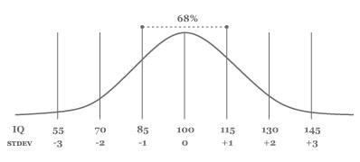
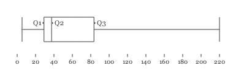

pattern.metrics
The pattern.metrics module is a loose collection of performance, accuracy, similarity and significance tests, including code profiling, precision & recall, inter-rater agreement, text metrics (similarity, readability, intertextuality, cooccurrence) and statistics (variance, chi-squared, goodness of fit).
It can be used by itself or with other pattern modules: web | db | en | search | vector | graph.

Documentation
- Similarity (Levenshtein, Dice)
- Readability (Flesch)
- Type-token ratio
- Intertextuality
- Cooccurrence
Profiler
Python is optimized with fast C extensions (e.g., dict traversal, regular expressions). Pattern is optimized with caching mechanisms. The profile() function can be used to test the performance (speed) of your own code. It returns a string with a breakdown of function calls + running time. You can then test the duration() of individual functions and refactor their source code to make them faster.
profile(function, *args, **kwargs) # Returns a string (report).
duration(function, *args, **kwargs) # Returns a float (seconds).
>>> from pattern.metrics import profile
>>> from pattern.en import parsetree
>>>
>>> def main(n=10):
>>> for i in range(n):
>>> parsetree('The cat sat on the mat.')
>>>
>>> print profile(main, n=100)| ncalls | tottime | percall | cumtime | percall | filename:lineno(function) |
| 1 | 0.082 | 0.082 | 1.171 | 1.171 | text/__init__.py:229(load) |
| 94,127 | 0.147 | 0.000 | 1.089 | 0.000 | text/__init__.py:231(<genexpr>) |
| 94,774 | 0.233 | 0.000 | 0.861 | 0.000 | text/__init__.py:195(_read) |
| 95,391 | 0.321 | 0.000 | 0.541 | 0.000 | text/__init__.py:33(decode_string) |
| 95,991 | 0.073 | 0.000 | 0.182 | 0.000 | {_codecs.utf_8_decode} |
In this example, the pattern.en parser spends most of its time loading data files and decoding Unicode.
Accuracy, precision and recall
Precision and recall can be used to test the performance (accuracy) of a binary classifier. A well-known classification task is spam detection, for example an is_spam() function that yields True or False (binary). Accuracy is a measure of how many times the function yields True for spam messages (= true positives, "hits"). Occasionally, the function might also return True for messages that are not spam (= false positives, "errors"), or False for messages that are spam (= false negatives, "misses").
Precision is a measure of hits vs. errors. Recall is a measure of hits vs. misses. High precision means that actual e-mail does not end up in the junk folder. High recall means that no spam ends up in the inbox.
The confusion_matrix() function takes a function that returns True or False for a given document (e.g., a string), and a list of (document, bool)-tuples for testing. It returns a (TP, TN, FP, FN)-tuple.
The test() function takes a function and a list of (document, bool)-tuples. It returns a tuple with (accuracy, precision, recall, F1-score). The optional average can be MACRO or None.
confusion_matrix(match=lambda document: False, documents=[(None, False)])
test(match=lambda document:False, documents=[], average=None)
| Metric | Formula | Description |
| Accuracy | (TP + TN) / (TP + TN + FP + FN) | percentage of correct classifications |
| Precision | TP / (TP + FP) | percentage of correct positive classifications |
| Recall | TP / (TP + FN) | percentage of positive cases correctly classified as positive |
| F1-score | 2 x P x R / (P + R) | harmonic mean of precision and recall |
For example:
>>> from pattern.metrics import confusion_matrix, test
>>>
>>> def is_spam(s):
>>> s = (w.strip(',.?!"') for w in s.lower().split())
>>> return any(w in ('viagra', 'lottery') for w in s)
>>>
>>> data = [
>>> ('In attachment is the final report.', False),
>>> ('Here is that link we talked about.', False),
>>> ("Don't forget to buy more cat food!", False),
>>> ("Shouldn't is_spam() flag 'viagra'?", False),
>>> ('You are the winner in our lottery!', True),
>>> ('VIAGRA PROFESSIONAL as low as 1.4$', True)
>>> ]
>>> print confusion_matrix(is_spam, data)
>>> print test(is_spam, data)
(2, 3, 1, 0)
(0.83, 0.67, 1.00, 0.80) In this example, is_spam() correctly classifies 5 out of 6 messages (83% accuracy). It identifies all spam messages (100% recall). However, it also flags a message that is not spam (67% precision).
Inter-rater agreement
Inter-rater agreement (Fleiss' kappa) can be used to test the consensus among different raters. For example, say we have an is_spam() function that predicts whether a given e-mail message is spam or not. It uses a list of words, each annotated with a "junk score" between 0.0-1.0. To avoid bias, each score is the average of the ratings of three different annotators. The annotators agree on obvious words such as viagra (everyone says 1.0), but their ratings diverge on ambiguous words. So how reliable is the list?
The agreement() function returns the reliability as a number between -1.0 and +1.0 (where +0.7 is reliable). The given matrix is a list in which each row represents a task. Each task is a list with the number of votes per rating. Each column represents a possible rating.
agreement(matrix)
>>> from pattern.metrics import agreement >>> >>> m = [ # 0.0 0.5 1.0 JUNK? >>> [ 0, 0, 3 ], # viagra >>> [ 0 1, 2 ], # lottery >>> [ 1, 2, 0 ], # buy >>> [ 3, 0, 0 ], # cat >>> ] >>> print agreement(m) 0.49
Although the annotators disagree on ambiguous words such as buy (one says 0.0, the others say 0.5), the list is quite reliable (+0.49 agreement). The averaged score for buy will be 0.33.
Text metrics
Similarity
The similarity() function can be used to test the similarity between two strings. It returns a value between 0.0-1.0. The optional metric can be LEVENSHTEIN or DICE. Levenshtein edit distance measures the similarity between two strings as the number of operations (insert, delete, replace) needed to transform one string into the other (e.g., cat → hat → what). Dice coefficient measures the similarity as the number of shared bigrams (e.g., nap and trap share one bigram ap).
similarity(string1, string2, metric=LEVENSHTEIN)
>>> from pattern.metrics import similarity, levenshtein
>>>
>>> print similarity('cat', 'what')
>>> print levenshtein('cat', 'what')
0.5
2Readability
The readability() function can be used to test the readability of a text. It returns a value between 0.0-1.0, based on Flesch Reading Ease, which measures word count and word length (= number of syllables per word).
readibility(string)
| Readability | Description |
| 0.9-1.0 | easily understandable by 11-year olds |
| 0.6-0.7 | easily understandable by 13 to 15-year olds |
| 0.3-0.5 | best understood by university graduates |
>>> from pattern.metrics import readability >>> >>> dr_seuss = "\n".join(( >>> "'I know some good games we could play,' said the cat.", >>> "'I know some new tricks,' said the cat in the hat.", >>> "'A lot of good tricks. I will show them to you.'", >>> "'Your mother will not mind at all if I do.'" >>> )) >>> print readability(dr_seuss) 0.908
Type-token ratio
The ttr() function can be used to test the lexical diversity of a text. It returns a value between 0.0-1.0, which is the average percentage of unique words (types) for each n successive words (tokens) in the text.
ttr(string, n=100, punctuation='.,;:!?()[]{}`''\"@#$^&*+-|=~_')| Author | Text | Year | TTR |
| Dr. Seuss | The Cat In The Hat | 1957 | 0.588 |
| Lewis Carroll | Alice In Wonderland | 1865 | 0.728 |
| George Washington | First Inaugural Address | 1789 | 0.722 |
| George W. Bush | First Inaugural Address | 2001 | 0.704 |
| Barack Obama | First Inaugural Address | 2009 | 0.717 |
Intertextuality
The intertextuality() function can be used to test the overlap between texts (e.g., plagiarism detection). It takes a list of strings and returns a dict with (i, j)-tuples as keys and float values between 0.0-1.0. For indices i and j in the given list, the corresponding float is the percentage of text i that is also in text j. Overlap is measured by n-grams (by default n=5 or five successive words). An optional weight function can be used to supply a weight for each n-gram (e.g., tf-idf).
texts=[], n=5, weight=lambda ngram: 1.0)
>>> from pattern.metrics import intertextuality
>>> from glob import glob
>>>
>>> index = {}
>>> texts = []
>>> for i, f in enumerate(glob('data/*.txt')):
>>> index[i] = f
>>> texts.append(open(f).read())
>>>
>>> for (i, j), weight in intertextuality(texts, n=3).items():
>>> if weight > 0.1:
>>> print index[i]
>>> print index[j]
>>> print weight
>>> print weight.assessments # Set of overlapping n-grams.
>>> print Cooccurrence
The cooccurrence() function can be used to test how often words occur alongside each other. It takes an iterable, string, file or list of files, and returns a {word1: {word2: count, word3: count, ...}} dictionary.
A well-known application is distributional semantics. For example, if cat meows and cat purrs occur often, meow and purr are probably related to cat, and to each other. This requires a large text corpus (e.g., 10+ million words). For performance, it should be given as an open(path) iterator instead of an open(path).read() string.
The window parameter defines the size of the cooccurrence window, e.g., (-1, -1) means the word to the left of the anchor. The term1 function defines which words are anchors (e.g., cat). By default, all words are anchors but this may raise a MemoryError. The term2 function defines which co-occuring words to count. The optional normalize function can be used to transform words (e.g., strip punctuation).
cooccurrence(iterable, window=(-1, -1),
term1 = lambda w: True,
term2 = lambda w: True,
normalize = lambda w: w)What adjectives occur frequently in front of which nouns?
>>> from pattern.metrics import cooccurrence
>>>
>>> f = open('pattern/test/corpora/tagged-en-oanc.txt')
>>> m = cooccurrence(f,
>>> window = (-2, -1),
>>> term1 = lambda w: w[1] == 'NN',
>>> term2 = lambda w: w[1] == 'JJ',
>>> normalize = lambda w: tuple(w.split('/')) # cat/NN => ('cat', 'NN')
>>> )
>>> for noun in m:
>>> for adjective, count in m[noun].items():
>>> print adjective, noun, count
('last', 'JJ') ('year', 'NN') 31
('next', 'JJ') ('year', 'NN') 10
('past', 'JJ') ('year', 'NN') 7
...
Statistics
Mean, median, variance, standard deviation
An average is a measure of the "center" of a data set (= a list of values). It can be measured in different ways, for example by mean, median or mode. Usually, a data set is a smaller sample of a population. For example, [1,2,4] is a sample of powers of two. The mean is the sum of values divided by the sample size: 1 + 2 + 4 / 3 = 2.37. The median is the middle value in the sorted list of values: 2.
Variance measures how a data set is spread out. The square root of variance is called the standard deviation. A low standard deviation indicates that the values are clustered closely around the mean. A high standard deviation indicates that the values are spread out over a large range. The standard deviation can be used to test the reliability of a data set.
For example, for two equally competent sports teams, in which each player has a score, the team with the lower standard deviation is more reliable, since all players perform equally well on average. The team with the higher standard deviation may have very good players and very bad players (e.g., strong offense, weak defense), making their games more unpredictable.
The avg() or mean() function returns the mean. The stdev() function returns the standard deviation:
mean(iterable) # [1, 2, 4] => 2.33
median(iterable) # [1, 2, 4] => 2
variance(iterable, sample=False) # [1, 2, 4] => 1.56
stdev(iterable, sample=False) # [1, 2, 4] => 1.53
| Metric | Formula |
| Mean | sum(list) / len(list) |
| Variance | sum((v - mean(list)) ** 2 for v in list) / len(list) |
| Standard deviation | sqrt(variance(list)) |
To compute the sample variance with bias correction, i.e., len(list) - 1, use sample=True.
We can use the mean() function to implement a generator for the simple moving average (SMA):
>>> from pattern.metrics import mean >>> >>> def sma(iterable, k=10): >>> a = list(iterable) >>> for m in xrange(len(a)): >>> i = m - k >>> j = m + k + 1 >>> yield mean(a[max(0,i):j])
Normal distribution
The normal (or Gaussian) distribution is a very common distribution of values. When graphed, it produces a bell-shaped curve. An even or uniform distribution on the other hand produces a straight horizontal line. For example, human intelligence is normally distributed. If we performed an IQ test among 750 individuals, about 2/3 or 250 of the IQ scores would range between IQ 85–115, or within one standard deviation (15) of the mean IQ 100. This means that few individuals have an exceptionally low or high IQ.
|
 distribution of iq scores |
The norm() function returns a list of n random samples from the normal distribution.
The pdf() or probability density function returns the chance (0.0-1.0) that a given value occurs in a normal distribution with the given mean and stdev.
norm(n, mean=0.0, stdev=1.0)
pdf(x, mean=0.0, stdev=1.0)
>>> from pattern.metrics import pdf >>> print sum(pdf(iq, mean=100, stdev=15) for iq in range(85, 115)) 0.6825
Histogram
The histogram() function returns a dictionary {(start, stop): [v1, v2, ...]} with the values from the given list grouped into k equal intervals. It is an estimate of the distribution of the data set (e.g., which intervals have the most values).
histogram(iterable, k=10)
>>> from pattern.metrics import histogram >>> >>> s = [70, 85, 85, 100, 100, 100, 115, 115, 130] >>> for (i, j), values in sorted(histogram(s, k=5).items()): >>> m = i + (j - i) / 2 # midpoint >>> print i, j, m, values 70.0 82.0 76.0 [70] 82.0 94.0 88.0 [85, 85] 94.0 106.0 100.0 [100, 100, 100] 106.0 118.0 112.0 [115, 115] 118.0 130.0 124.0 [130]
Moment
The moment() function returns the n-th central moment about the mean, where n=2 is variance, n=3 skewness and n=4 kurtosis. Variance measures how wide the data is spread out. Skewness measures how evenly the data is spread out: > 0 indicates fewer high values, < 0 fewer low values. Kurtosis measures how tight the data is near the mean: > 0 indicates fewer values near the mean (= more extreme values), < 0 more values near the mean.
moment(iterable, n=2) # n=2 variance | 3 skewness | 4 kurtosis
skewness(iterable) # > 0 => fewer values over mean
kurtosis(iterable) # > 0 => fewer values near mean
Skewness and kurtosis are 0.0 for the normal distribution:
>>> from pattern.metrics import skewness >>> from random import gauss >>> >>> print skewness([gauss(100, 15) for i in xrange(100000)]) 0.001
Quantile & box plot
The quantile() function returns the interpolated value at point p (0.0-1.0) in a sorted list of values. With p=0.5 it returns the median.The parameters a, b, c, d refer to the algorithm by Hyndman and Fan [1].
The boxplot() function returns a (min, q1, q2, q3, max)-tuple for a given list of values, where q2 is the median, q1 the quantile with p=0.25 and q3 the quantile with p=0.75, i.e., the 25-75% range around the median. This can be used to identify outliers. For example, if a sample of temperatures in your house comprises you (37°C), the cat (38°C), the refrigerator (5°C) and the oven (220°C), then the average temperature is 75°C. This of course is incorrect since the oven is an outlier. It lies well outside the 25-75% range.
quantile(iterable, p=0.5, sort=True, a=1, b=-1, c=0, d=1)
boxplot(iterable)
>>> from pattern.metrics import boxplot >>> print boxplot([5, 37, 38, 220]) (5.0, 29.0, 37.5, 83.5, 220.0)
| you, the cat, the fridge and the oven |
Reference: Adorio E. (2008) http://adorio-research.org/wordpress/?p=125
Statistical tests
Fisher's exact test
The fisher() function or Fisher's exact test can be used to test the contingency of a 2 x 2 classification. It returns probability p between 0.0-1.0, where p < 0.05 is significant and p < 0.01 is very significant.
Say that 96 pet owners were asked about their pet, and 29/46 men reported owning a dog and 30/50 women reported owning a cat. We have a 2 x 2 classification (cat or dog ↔ man or woman) that we assume to be evenly distributed, i.e., we assume that men and women are equally fond of cats and dogs. This is the null hypothesis. But Fisher's exact test yields p 0.027 < 0.05 so we need to reject the null hypothesis. There is a significant correlation between gender and pet ownership (women are more fond of cats).
fisher(a, b, c, d)
>>> from pattern.metrics import fisher >>> print fisher(a=17, b=30, c=29, d=20) 0.027
| men | women | |
| cat owner | 17 (a) | 30 (b) |
| dog owner | 29 (c) | 20 (d) |
Reference: Edelson, J. & Lester D. (1983). Personality and pet ownership: a preliminary study. Psychological Reports.
Chi-squared test
The chi2() function or Pearson's chi-squared test can be used to test the contingency of an n x m classification. It returns an (x2, p)-tuple, where probability p < 0.05 is significant and p < 0.01 is very significant. The observed matrix is a list of lists of int values (i.e., absolute frequencies). By default, the expected matrix is evenly distributed over all classes, and df is (n-1) * (m-1) degrees of freedom.
Say that 255 pet owners aged 30, 40, 50 or 55+ were asked whether they owned a cat or a dog. We have an n x m classification (cat or dog ↔ 30, 40, 50, 55+) that we assume to be evenly distributed, i.e., we assume that pet preference is unrelated to age. This is the null hypothesis. The chi-squared test for the data below yields p 0.89 > 0.05, which confirms the null hypothesis.
chi2(observed=[], expected=None, df=None)
>>> from pattern.metrics import chi2 >>> print chi2(observed=[[15, 22, 27, 21], [37, 40, 52, 41]]) (0.63, 0.89)
| 25–34 | 35–44 | 45–54 | 55+ | |
| cat owner | 15 | 22 | 27 | 21 |
| dog owner | 37 | 40 | 52 | 41 |
Kolmogorov-Smirnov test
The ks2() function or two-sample Kolmogorov-Smirnov test can be used to test if two samples are drawn from the same distribution. It returns a (d, p)-tuple with maximum distance d and probability p (0.0-1.0). By default, the second sample a2 is NORMAL, i.e., a list with n values from gauss(mean(a1), stdev(a1)).
ks2(a1, a2=NORMAL, n=1000)
>>> from pattern.metrics import ks2 >>> ks2([70, 85, 85, 100, 100, 100, 115, 115, 130], n=10000) (0.17, 0.94)
The values in the given list appear to be normally distributed (bell-shape).
See also
- Scipy (BSD): scientific computing for Python.